1. L'idea di fondo
Tutto il calcolo integrale risponde a una sola domanda: conosco la velocità con cui una grandezza cambia, e voglio sapere quanto ne è stato accumulato in totale.
La funzione f è il ritmo con cui qualcosa succede. La funzione F è il totale accumulato fino a quel momento. L'area sotto il grafico di f è proprio quel totale.
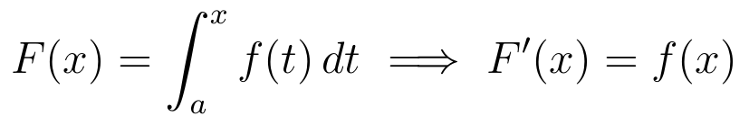
Il teorema fondamentale dice che le due operazioni sono l'una l'inversa dell'altra: derivando l'accumulo si ritrova il ritmo.
2. Il circuito RC: corrente e tensione
La relazione che lega corrente e tensione su un condensatore è una derivata:
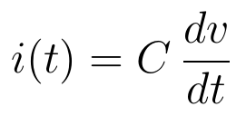
Ma in laboratorio serve quasi sempre il contrario: si conosce la corrente e si vuole sapere che tensione c'è sul condensatore. Girare quella relazione significa integrare.
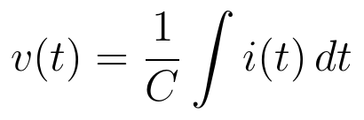
La carica accumulata fino all'istante t è l'area sotto la curva della corrente:
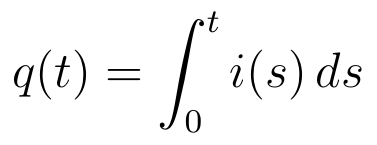
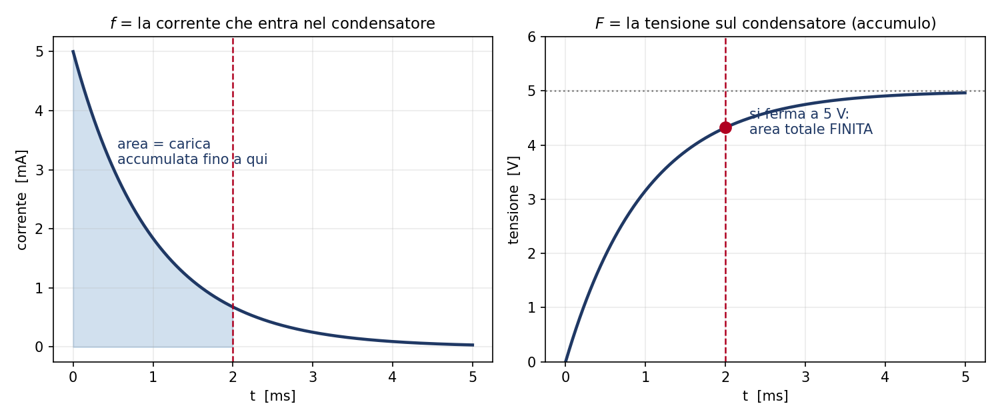
Esempio della figura: alimentazione 5 V, R = 1 kΩ, C = 1 µF. A sinistra la corrente (la f), a destra la tensione sul condensatore (la F). Dove la corrente è grande, la tensione sale ripida; dove la corrente è quasi nulla, la tensione è quasi ferma. La carica totale accumulata vale C·V = 5 µC.
3. La costante di integrazione è la condizione iniziale
La primitiva viene sempre con un « + C » indeterminato. In matematica sembra un fastidio; in circuito è la cosa più concreta che c'è: è quanto era già presente nel condensatore quando si è chiuso l'interruttore.
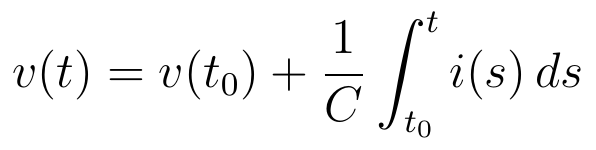
Tutte le primitive hanno la stessa derivata: sono curve parallele, traslate in verticale. La condizione iniziale ne sceglie una sola. Questo è il problema di Cauchy, cioè il problema fisico completo: la legge che governa il sistema, più il punto di partenza.
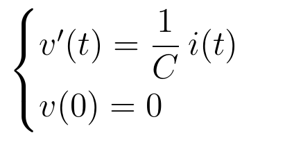
Quando in laboratorio si dice « il condensatore parte scarico, quindi v(0) = 0 », si sta risolvendo esattamente un problema di Cauchy.
4. Integrali impropri di Tipo 1: e se si lasciasse andare per sempre?
Il transitorio di carica non finisce mai davvero: la corrente cala verso zero senza annullarsi, la tensione si avvicina a 5 V senza arrivarci.
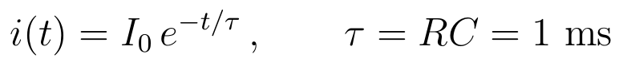
Domanda onesta: se si aspetta all'infinito, l'energia dissipata sulla resistenza è infinita? No, ed è un numero preciso:
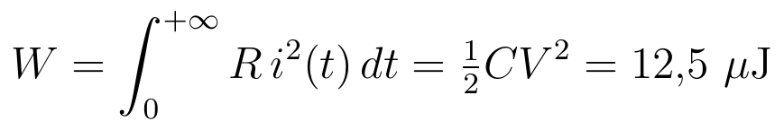
Intervallo infinito, risultato finito: è un integrale improprio di Tipo 1 che converge, e significa una cosa fisica concreta — il componente dissipa in tutto una quantità finita di energia, non brucia.
Quando invece l'integrale diverge, la grandezza fisica esplode. Il criterio sull'esponente serve proprio a sapere quanto in fretta deve smorzarsi la coda perché il totale resti finito: un'esponenziale si smorza sempre abbastanza, una coda che va come 1/t no.
5. Integrali impropri di Tipo 2: il picco stretto
Qui l'intervallo è corto, ma la grandezza schizza in un istante: pensa alla corrente di picco nei primi microsecondi di una scarica. La domanda diventa: la carica totale che passa in quel picco è finita?
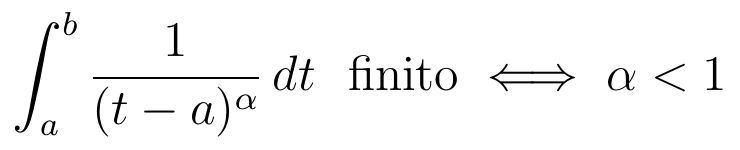
La risposta dipende da quanto è stretto il picco rispetto a quanto è alto. Se l'esponente è minore di 1, la carica totale resta finita anche se il picco è infinitamente alto. È il motivo per cui in elettronica si può ragionare con impulsi idealizzati: l'altezza va all'infinito, ma l'area resta un numero.
6. I fratti semplici e i poli dei circuiti
Spezzare una frazione complicata in frazioni elementari:
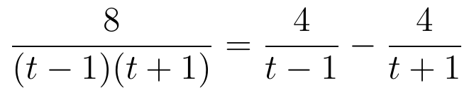
è la stessa identica operazione che si fa sulle funzioni di trasferimento: si scompone la frazione nei suoi poli, e ogni pezzo semplice corrisponde a un modo di risposta del circuito, cioè a una costante di tempo. È la base dell'antitrasformata di Laplace, con cui si calcola la risposta di un RLC.
Nota onesta: questo aggancio è prassi standard dell'ingegneria elettronica, non un contenuto verificato sulla dispensa del corso. Non serve per l'esame di Analisi 1; serve a capire perché quella tecnica esiste.
7. In sintesi
Lo stesso schema « ritmo → totale » ritorna dappertutto:
| Grandezza f (come cambia) | Grandezza F (quanto vale) | Dove la incontri |
|---|---|---|
| corrente i(t) | carica q(t) | condensatore in carica |
| potenza p(t) | energia W(t) | dissipazione su una resistenza |
| tensione v(t) | flusso concatenato | induttore |
| velocità | spazio percorso | cinematica |
| portata | volume | riempimento di un serbatoio |
Quindi non sono manovre a vuoto: si tratta di passare da « come cambia » a « quanto vale », e di fissare il risultato con il valore di partenza. Le equazioni differenziali, che vengono dopo, sono la versione generale di questa stessa idea.
Promemoria dei controlli
Primitiva trovata: la derivo e devo ritrovare f (andata e ritorno).
Funzione integrale con estremo iniziale a: F(a) deve fare 0.
Tipo 1 (intervallo infinito): converge se l'esponente è maggiore di 1.
Tipo 2 (funzione che esplode a un estremo): converge se l'esponente è minore di 1.
Formula algebrica dubbia: provala con un numero e vedi se torna.